Select a Section
Explore exciting events at our symposium!
Registration Desk
Technical Events
Non-Technical Events
Food and Snacks
Back to Sections

Image description will appear here.
Previous
Next
Back to Subsections
Back to Sections